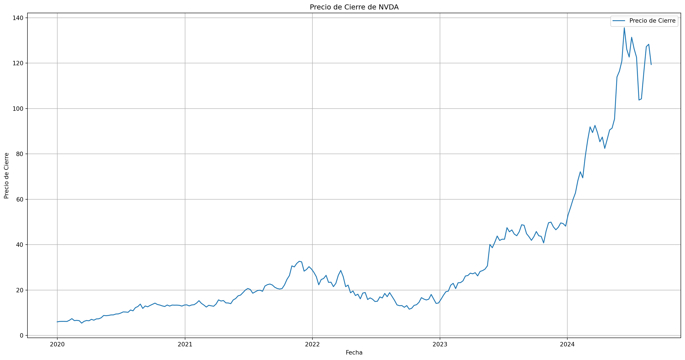
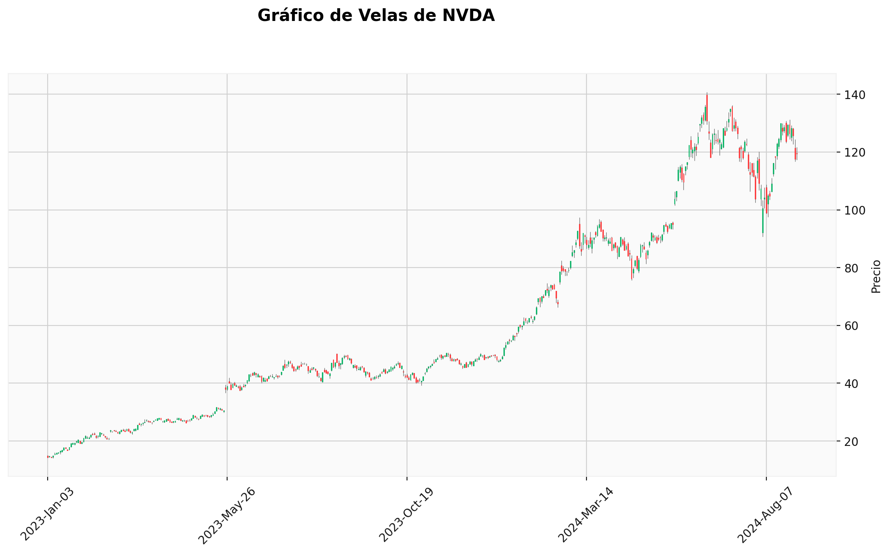
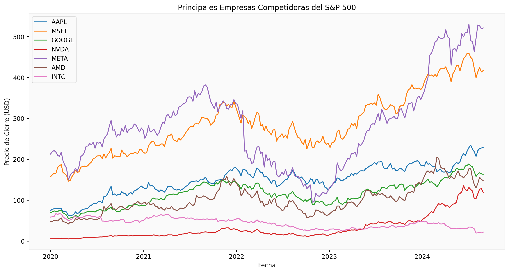

import pandas as pd
import numpy as np
import matplotlib.pyplot as plt
import seaborn as sns
from datetime import timedelta
import yfinance as yf
from scipy.stats import norm
import mplfinance as mpfProyecto Gestión Financiera
# Ticker de NVIDIA
ticker = "NVDA"
# Descargar datos históricos semanales para NVDA
data = yf.download(ticker, start="2020-01-01", end="2024-09-01", interval="1wk")[*********************100%***********************] 1 of 1 completedHito 1:
Descripción Activo y Contexto
Fecha de entrega límite: Miércoles 25 de Septiembre 23:59.
Definición
Nvidia Corporation pertenece al sector tecnológico, con un enfoque clave en hardware y software para la inteligencia artificial (IA) y la computación gráfica. Este sector abarca el desarrollo y suministro de tecnologías avanzadas que permiten la creación, procesamiento y análisis de grandes cantidades de datos, habilitando la transformación digital en diversas industrias. Nvidia se destaca dentro del subgrupo de procesadores de alto rendimiento (GPUs) y computación acelerada, esenciales para el desarrollo de IA y aprendizaje automático.
En el ámbito académico, se han publicado varios estudios científicos que destacan el rol de Nvidia en la optimización del consumo de energía para entrenar modelos de aprendizaje automático. En particular, el artículo de García-Martín et al. (2021) analiza cómo las GPUs de Nvidia han reducido significativamente la cantidad de energía utilizada en estos procesos, permitiendo una mayor eficiencia y reduciendo la huella de carbono (Expansión). Este tipo de investigaciones científicas caracteriza y valida el impacto de Nvidia dentro del sector de la IA y su papel en la aceleración de tecnologías de próxima generación.
Motivacion
Nvidia fue elegida para este análisis por su “demanda creciente de chips de IA” y ha revolucionado el campo de la “computación acelerada”, alcanzando una “capitalización de mercado” de más de “2 billones de dólares” en 2023. Google, Meta y Microsoft dependen de su tecnología para entrenar modelos avanzados de inteligencia artificial, lo que las coloca como líderes indiscutibles en este campo. Sin embargo, debido a una mayor competencia en el mercado y ajustes en la demanda de chips de IA, Nvidia ha enfrentado un “ligero estancamiento” en 2024.
Según el artículo de Renta 4 (“Nvidia y las expectativas de crecimiento seguirán marcando el guion de las bolsas”), Debido a su capacidad de anticipar las tendencias tecnológicas emergentes y mantener su posición de liderazgo en el sector de IA, Nvidia sigue siendo una empresa clave en el mundo.
# Configurar el gráfico
plt.figure(figsize=(20, 10))
plt.plot(data.index, data['Close'], label='Precio de Cierre')
plt.title('Precio de Cierre de NVDA')
plt.xlabel('Fecha')
plt.ylabel('Precio de Cierre')
plt.grid()
plt.legend()
plt.show()
El aumento en la demanda global de chips de IA se refleja en el gráfico del precio de cierre de Nvidia desde 2023. Esta tendencia refleja claramente el éxito de Nvidia en aprovechar el aumento de las aplicaciones de inteligencia artificial en campos como la medicina, los vehículos autónomos y la robótica. La línea de crecimiento que observamos es casi exponencial, lo que demuestra cómo Nvidia ha logrado mantenerse a la vanguardia tecnológica gracias a la innovación continua.
df = yf.download(ticker, start="2023-01-01", end="2024-09-01")
# Crear gráfico de velas
mpf.plot(df, type='candle', volume=False, title='Gráfico de Velas de NVDA', style='yahoo', ylabel='Precio', figsize=(14, 7))[*********************100%***********************] 1 of 1 completed
El gráfico de velas muestra el comportamiento de Nvidia en los últimos meses. Se puede ver un marcado aumento en el precio de las acciones desde principios de 2023, con momentos de alta volatilidad y picos que coinciden con anuncios importantes de nuevos productos y avances tecnológicos. Este aumento refleja la confianza de los inversores en la capacidad de Nvidia para continuar liderando el mercado de la IA y la computación acelerada.
Nvidia no solo ha sido un pionero en inteligencia artificial, sino que también ha creado una infraestructura vital para la expansión de la IA en sectores estratégicos como los centros de datos, donde empresas tecnológicas como Google, Microsoft y Meta dependen de la plataforma Nvidia DGX para el entrenamiento de redes neuronales y el desarrollo de modelos de aprendizaje profundo. Nvidia ha logrado colocarse como la tercera compañía más valiosa en los Estados Unidos, superando a gigantes como Apple y Microsoft, con una capitalización de mercado que supera los 2 billones de dólares, según Expansión y El Sol de México.
Nvidia también ha tenido un impacto significativo en la sostenibilidad de la IA. Según el estudio de García-Martín et al. (2021), las GPU de Nvidia han mejorado el rendimiento computacional y el consumo de energía, lo que es esencial para garantizar una IA sostenible a largo plazo. La importancia de Nvidia como un actor clave en el futuro de la tecnología global se ve reforzada por este factor, junto con la continua adopción de la IA en sectores tradicionales y emergentes.
El aumento que se muestra en los gráficos confirma el enfoque de Nvidia en la innovación continua y su capacidad para adaptarse a las demandas tecnológicas emergentes como la computación acelerada y la IA generativa. Su rentabilidad y valor bursátil han aumentado a niveles sin precedentes debido a este posicionamiento, que le ha permitido destacarse frente a sus competidores y capturar una participación significativa en el mercado.
Contexto
Nvidia Corporation es uno de los principales actores del sector tecnológico en el S&P500, particularmente en el desarrollo de inteligencia artificial (IA) y procesadores gráficos (GPU). Nvidia se encuentra junto a líderes tecnológicos como Apple, Microsoft y Google en el S&P500. Para analizar las tendencias del sector y la posición competitiva de Nvidia, se presentan los precios históricos de Nvidia y junto con sus principales competidores del S&P500.
# Lista de los principales compeidores en S&P500
sp500_top_comp = ['AAPL', 'MSFT', 'GOOGL', 'NVDA', 'META', 'AMD', 'INTC']
# Descargar datos históricos para las 10 empresas más grandes del S&P 500
data2 = yf.download(sp500_top_comp, start="2020-01-01", end="2024-09-01", interval="1wk", group_by='ticker')
# Asegúrate de que los índices de los DataFrames sean consistentes
data2 = data2.stack(level=0).rename_axis(['Date', 'Ticker']).reset_index()
# Gráfico de líneas para todos los tickers
plt.figure(figsize=(14, 7))
for ticker in sp500_top_comp:
plt.plot(data2[data2['Ticker'] == ticker]['Date'], data2[data2['Ticker'] == ticker]['Close'], label=ticker)
plt.title('Principales Empresas Competidoras del S&P 500')
plt.xlabel('Fecha')
plt.ylabel('Precio de Cierre (USD)')
plt.legend()
plt.grid()
plt.show()[ 0% ][************** 29% ] 2 of 7 completed[********************* 43% ] 3 of 7 completed[********************* 43% ] 3 of 7 completed[**********************71%********* ] 5 of 7 completed[**********************86%**************** ] 6 of 7 completed[*********************100%***********************] 7 of 7 completed
Nvidia (NVDA) ha demostrado un patrón de crecimiento constante, especialmente a partir de 2023, impulsado por la creciente demanda de sus procesadores de IA y GPU, aunque los precios de las acciones varían según las empresas. Nvidia ha dominado los sectores estratégicos como los centros de datos y la IA generativa, lo que ha logrado diferenciarse notablemente de sus competidores, como AMD e Intel, y ha capturado una cuota de mercado significativa en estos sectores clave.
El gráfico demuestra claramente cómo Nvidia ha mantenido un ritmo de crecimiento sostenido y, en muchos casos, superior a sus competidores. Esto se debe principalmente a su capacidad de innovación constante en el campo de los chips de inteligencia artificial, lo que le ha permitido a la empresa posicionarse como líder en tecnologías de aprendizaje profundo y computación de alto rendimiento. Aunque empresas como AMD también han experimentado crecimiento, el avance de Nvidia ha sido significativamente mayor, especialmente desde el auge de la IA generativa en 2023.
Este comportamiento muestra cómo el desarrollo y adopción de tecnologías avanzadas de inteligencia artificial ha estado estrechamente relacionado con la valorización bursátil de las empresas tecnológicas. Debido a la explosión de la demanda global de chips para IA, Nvidia ha experimentado un aumento drástico en su rentabilidad, lo que ha impulsado su crecimiento “lineal” en comparación con otras empresas tecnológicas.
Se aprecia un crecimiento exponencial en el precio de las acciones de Nvidia desde 2023 en adelante, lo que destaca el impacto de su innovación en chips de IA y su capacidad para liderar el mercado en expansión. Su capacidad única para mejorar y optimizar la eficiencia de los chips destinados a la inteligencia artificial ha contribuido a este crecimiento acelerado, consolidando su posición como líder tecnológico.
Modelo Binomial
El Modelo Binomial de Valoración de Opciones (BM, por sus siglas en inglés) también conocido como Cox-Ross-Rubinstein introducido en Cox, Ross, y Rubinstein (1979), es un modelo que estima el valor de una opción en t=0 teniendo pagos futuros en diferentes estados (usualmente “Up” y “Down”). Este Modelo Binomial asume que no hay posibilidad de arbitraje en el mercado, determinando el precio que sigue un activo en un random walk, en donde en cada paso (tiempo) existe una probabilidad de que el precio suba o baje (Ahmad, 2018).

Para calcular la valoración de la opción con el Modelo Binomial, es necesario definir \(S_0\), que corresponde al precio actual del activo. Además, se deben determinar los valores de \(u\) y \(d\), que representan los factores por los cuales se multiplica \(S_0\) en cada estado para obtener el precio del activo en cada caso en el siguiente período (t = 1):
\[ S_1 = \begin{cases} S_0\cdot u \text{ en el estado ``Up"} \\ S_0\cdot d \text{ en el estado ``Down"}\end{cases} \]
También se debe calcular la probabilidad \(P\) de que ocurra el caso “Up”, la probabilidad de que ocurra el otro caso (“Down”) simplemete quedaría en \((1-P)\). Para el calculo de la porobabilidad se usa la siguiente ecuación:
\[ P = \frac{e^r-d}{u-d} \]
Donde \(r\) es la tasa libre de riesgo.
Por otro lado se deben calcular \(C_u\) y \(C_d\) los cuales se obtienen como los precios de una opción europea:
\[ C_u = max(0, S_0\cdot u-k)\\ C_d = max(0, S_0\cdot d-k) \]
Finalmente el precio de la opción se calcula de la siguiente manera:
\[ V = \frac{C_u\cdot P + C_d\cdot (1-P)}{1+r} \]
opt_call = pd.read_csv('/cloud/project/Bases de Datos /Opciones_call_NVDA_Expiracion_2025-01-17.csv', delimiter=";")
S = data['Close'].iloc[-1] # Precio actual del activo subyacente
T = 0.315708 # Tiempo hasta la expiración (en años)
K = opt_call[opt_call['inTheMoney'] == True].iloc[-1]
lp = K["lastPrice"]
K = K['strike'] # Precio de ejercicio de la opción
r = 0.045 # Tasa de interés libre de riesgo T_Bill 17 week
S = data['Close'].iloc[-1] # Precio actual del activo subyacente
T = 0.315708 # Tiempo hasta la expiración (en años)
K = opt_call[opt_call['inTheMoney'] == True].iloc[-1]
lp = K["lastPrice"]
K = K['strike'] # Precio de ejercicio de la opción
r = 0.0444 # Tasa de interés libre de riesgo T_Bill 17 week
print(f"Precio de ejercicio: {K}")
print(f"Ultimo precio: {lp}")
#https://home.treasury.gov/resource-center/data-chart-center/interest-rates/TextView?type=daily_treasury_bill_rates&field_tdr_date_value=2024Precio de ejercicio: 124.0
Ultimo precio: 15.32# Modelo binomial
import math
rendimientos = np.diff(np.log(data['Close']))
sigma = np.std(rendimientos[1:]) # Volatilidad
diff = T/1
u = 1 + sigma * np.sqrt(diff) # Factor de crecimiento de un paso
d = 1 - sigma * np.sqrt(diff) # Factor de decrecimiento de un paso
#u = 1.2 # Factor de crecimiento de un paso
#d = 0.9 # Factor de decrecimiento de un paso
u = 1.2
d = 0.9
# Calcular los valores
Su = S * u
Sd = S * d
p = (np.exp(r) - d) / ((1 + r) * (u - d))
cu = max(Su - K, 0)
cd = max(Sd - K, 0)
# Calcular el precio de la opción
option_price = (cu * p + cd * (1 - p)) / (1 + r)
# Imprimir el resultado
print(f"El precio de la opción con el Modelo Binomial es: {option_price:.2f}")El precio de la opción con el Modelo Binomial es: 8.55Modelo Black and Scholes (BS)
El Modelo de Black-Scholes es un método ampliamente utilizado para valorar opciones financieras europeas, específicamente opciones de compra (call) y opciones de venta (put). Se basa en varios supuestos, como que los precios de los activos siguen una distribución lognormal y que no existen oportunidades de arbitraje. Para una opción de compra, la fórmula es:
\(C = S_0 \cdot N(d_1) - K \cdot e^{-rT} \cdot N(d_2)\)
El modelo toma en cuenta cinco variables clave: el precio actual del activo subyacente (\(S₀\)), el precio de ejercicio (\(K\)), el tiempo hasta la expiración (\(T\)), la volatilidad del activo (\(σ\)) y la tasa libre de riesgo (\(r\)).
\(S₀\): Precio actual del activo subyacente.
\(K\): Precio de ejercicio.
\(T\): Tiempo hasta la expiración.
\(r\): Tasa libre de riesgo.
\(σ\): Volatilidad del activo subyacente.
Explicación de los Términos:
\(d₁\) y \(d₂\) son valores que representan probabilidades ajustadas de que la opción sea ejercida.
\(d_1=\frac{(ln(S_0/K)+(r+2σ2)T)}{σ\sqrt{T}}\)
\(d_2=d_1−σ\sqrt{T}\)
N(d₁) y N(d₂) son las probabilidades acumulativas de la función normal estándar.
Este modelo es útil porque permite a los inversores calcular el valor teórico de las opciones y tomar decisiones sobre si comprar o vender en función de ese valor. Aunque es muy poderoso, tiene ciertas limitaciones, como la suposición de que no hay costos de transacción ni dividendos, y que la volatilidad es constante a lo largo del tiempo.
# Definición de la función Black-Scholes
def black_scholes(S, K, t, r, sigma):
d1 = (np.log(S / K) + (r + 0.5 * sigma**2) * t) / (sigma * np.sqrt(t))
d2 = d1 - sigma * np.sqrt(t)
N_d1 = norm.cdf(d1)
N_d2 = norm.cdf(d2)
precio_call = S * N_d1 - K * np.exp(-r * t) * N_d2
return precio_call
# Calcular y mostrar el precio de la opción
precio_opcion = black_scholes(S, K, T, r, sigma)
print(f"El precio de la opción con el Modelo Black and Scholes es {precio_opcion:.2f}")El precio de la opción con el Modelo Black and Scholes es 0.82Comparación de modelos
Ambos modelos son comúnmente utilizados en las finanzas. Por lo tanto, se puede afirmar que cuentan con respaldo y fundamentos sólidos. Según el artículo de (Ahmad, 2018), los resultados del precio de la opción calculados con ambos modelos muestran una correlación muy cercana a 1, lo que significa que si el precio de la opción aumenta con un modelo, también lo hace con el otro. Sin embargo, esto no implica que ambos modelos proporcionen el mismo precio, como se puede observar en el ejercicio realizado anteriormente.
Estos modelos difieren en algunas cosas, tales como:
Precio del activo subyacente: En modelo Black and Scholes sigue una distribución lognormal mientras que el Binomial multiplica el valos \(S_0\) con dos opciones (\(u\) y \(d\))
Debido a lo anterior, el modelo de Black and Scholes es continuo y el Binomial discreto.
El modelo BS sirve solo para opciones europeas, mientras que el Binomial también sirve para opciones americanas.
También tienen algunas similitudes:
Ambos utilizan el precio actual del activo subyacente.
Ambos usan la tasa libre de riesgo.
En este caso los dos se usaron para un periodo de tiempo.
Ambos consideran la volatilidad del activo.
En resumen, el modelo de Black-Scholes constituye una buena herramienta analítica para valorar opciones europeas y supone movimientos continuos en las cotizaciones del mercado. En cambio, el modelo Binomial ofrece mayor flexibilidad al emplear una estructura de árbol que facilita la valoración tanto de opciones europeas como americanas. Elegir uno u otro modelo dependerá del tipo específico de opción que se esté analizando y las inferencias que se quieran hacer en relación a cómo evolucionarán los precios en el mercado financiero.
Bibliografía
Getzner, Johannes & Charpentier, Bertrand & Günnemann, Stephan. (2023). Accuracy is not the only Metric that matters: Estimating the Energy Consumption of Deep Learning Models. 10.48550/arXiv.2304.00897.
Renta 4 Banco. (2023). Nvidia y las expectativas de crecimiento seguirán marcando el guion de las bolsas. https://www.r4.com/articulos-y-analisis/opinion-de-expertos/nvidia-y-las-expectativas-de-crecimiento-seguiran-marcando-el-guion-de-las-bolsas.
Referencias
Cox, John C., Stephen A. Ross, y Mark Rubinstein. 1979. “Option pricing: A simplified approach”. Journal of Financial Economics 7 (3): 229–63. https://doi.org/10.1016/0304-405X(79)90015-1.